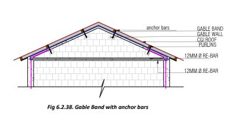
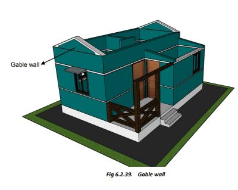

Roof Construction
RCC Slab for the Roof:
● We will provide an RCC slab roof for the rooms. The RCC slab roof will provide a flat roof for future use, and we can opt to add another storey later if needed.
● The veranda and cooking area will have sloping roofs.
RCC Slab Roof:
● Provide wooden or steel shuttering.
● Over the shuttering, provide 12 mm dia main steel bars (bent as shown in the figure) at 15 cm spacing, resting on the two longer walls.
● All bars are bent like this and placed alternately so that the bent-up and straight ends of the bars appear at both walls alternately.
● Now provide 10 mm dia steel bars parallel to the longer wall over the already provided 12 mm dia bars, at a spacing of about 23 cm between the bars (Blue).
● Tie the bars well. Ensure that the bent (cranked) part of the bars is in the vertically up direction.
Step 6: Verandah Roofing
Sloping CGI Sheet Roof for Veranda (Front Veranda Roof):
● The veranda roof will be supported on existing walls and two pillars in the front. The toilet roof shall be supported on toilet walls.
● The front pillars to support the roof can be made of RCC or RBC (reinforced Brick Concrete).
● Prefer RCC columns for two-storey houses and RBC for single-storey houses.
● RCC Column: Make 230mm x 230mm or 23 cm dia round pillars with 4 numbers 12mm diameter steel bars and 6mm diameter rings @ 20 mm c/c.
● Make a wooden or steel frame of rafters and purlins to support the CGI sheet roof.
● Fix CGI sheets to the purlins using J-hooks.
● If you wish to add one more storey, provide an RCC flat roof.
● The corner steel bars will go into the roof parapet through the RCC roof.
● Extend the bars in the parapet to make the upper storey.
● Add steel or RCC stairs to reach the roof from the veranda.
Step 7: Gable Roof Construction
The following steps are to be followed in case a gable roof is required:
● To make a Gable wall, create one course (6”) of block masonry leaving about 300mm from each end (as shown in the figure).
● Over this course, make sloping masonry to create the gable wall at a slope of 15 to 30 degrees.
● Over the gable masonry, provide 2 nos of 10mm diameter steel bars and 6mm links as in EQ bands (as shown in blue colour) to form an RCC Gable band.
● Vertical corner bars coming from the walls (shown in red) are bent and tied to the gable band bars as shown.
● Now lay 75mm thick concrete over the Gable to make the RCC gable band.
● Provide and fix anchors of MS flat (50mmx5mm) in the gable wall and band (as shown in the figure) to fix roof purlins.
● Provide a 50x50x5 mm steel angle in the RCC gable band, which will project about 40 cm from the wall. The last purlin shall be fixed on this MS angle (as shown in the figure).
1) Before concreting the Gable Band, provide anchor bars in concrete as shown, to anchor purlins to the gable band.
Fill the gaps between the purlins on the Gable wall with masonry in cement mortar. This will fix the purlins in position.
2) After the RCC Gable Bands have cured for at least two weeks, we can start assembling the Roof.
We will provide wooden or steel trusses on the walls of the rooms and fix them in position (see details). The purlins are now fixed on the trusses and the Gable walls using steel clamps/cleats.
3) Once the supporting structure is ready, CGI sheets are fixed using J-bolts (and not steel screws). Also, provide rainwater gutters and pipes.
4) To avoid leakages, always punch CGI sheets upwards from below the roof and not downward from above the sheets.
The structure is now ready. Provide internal and external plaster, door/window shutters, floors, electrical, water supply, and sanitary fittings, etc. Paint the house as per your liking.
 